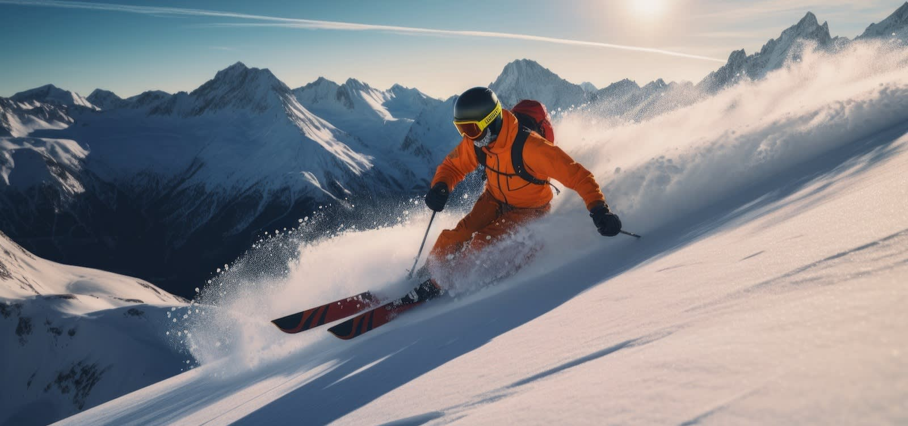

Jack Steel
Programming and Software Devolpment
Hobbies

How to Ski
- Stand upright while keeping your balance.
- Keep knees slightly bent as you descend down the hill.
- Turn yourself by shifting your weight towards your downhill ski.
- Kepp yourself upright as your body starts to turn on the slope.
- Repeatly turn across the hill to control your speed and descent.
- Shortly before you reach the bottom of the hill, prepare to stop.
- Stop by turning your skiis inward creating a "pizza" for a beggineer stop
- Keep this form until you eventually stop moving.
- Congrats on making it down your first hill!